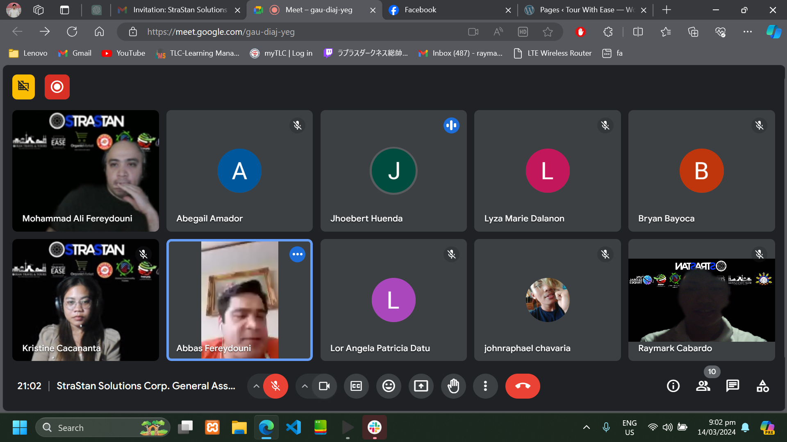
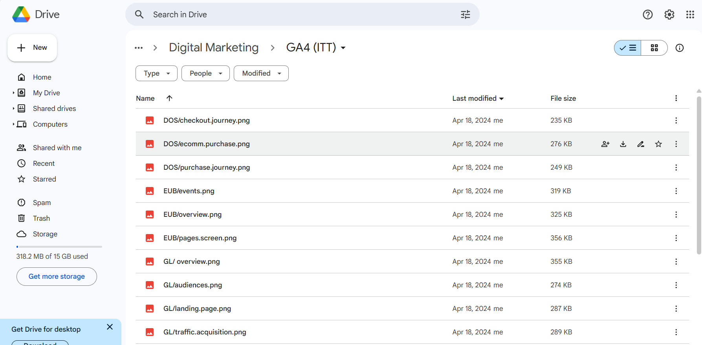

 
The project Manager invited us in a meeting at 7 pm in the evening to talk about the project that we are handling to ask for our progress and new rules. Each one of us in a meeting asked by the project manager of what we are now in a project and she also announce the new rules that we have to upload the task done in gdrive thru screenshot, for them to be able to see our progress. After that The Project Manager end the call and we continue what we are doing.
The next day, I did what Kristine instructed, which was to upload screenshots of the website through GA4 and the FB pixel to Google Drive. I took screenshots one by one of GA4 and the FB pixel. After capturing each screenshot, I uploaded them to Google Drive and labeled them based on their respective names.
Kristine messaged on Slack about a general meeting with Sir Maf, Sir Abbas, and Sir Ricz to discuss important matters. Each of us was asked individually about our accomplishments and projects that need completion. Sir Maf also gave feedback and complimented me on my work, encouraging me to keep it up. We discussed a lot during the meeting about our ongoing tasks. Sir Abbas also praised us for doing a good job.
After that day. I Explored Facebook Pixel's Advanced Matching capabilities and creating custom events for more precise tracking and optimization. This guide delves into leveraging data parameters for improved audience targeting and conversion insights on Facebook, enhancing marketing strategies for better ROI and user engagement.
After that, I created custom events for the Facebook Pixel such as Add to Cart, Lead, Page View, Check Out, and others. I copied the pixel ID and pasted it into Google Tag Manager, created events, added parameters, and set up triggers. Then I saved it, checked it through preview mode, and verified if the custom events I created were being captured in the Facebook Pixel.